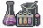
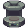
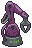
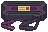
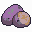
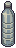
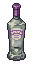
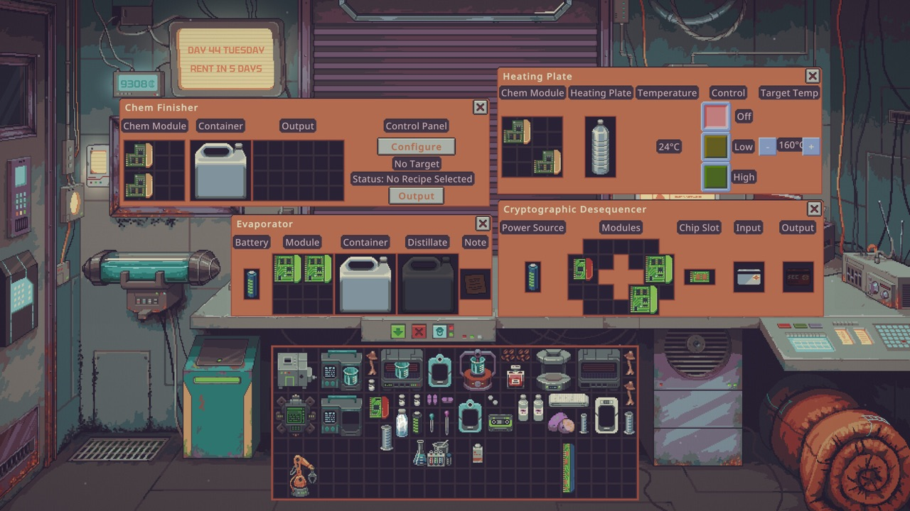

Phòng Lab Probably Stolen
So sánh các sản phẩm hoá chất và bộ máy tính cho từng mẻ: cần bao nhiêu cồn, axit, Reducing Agent, ra được mấy lọ/viên, đạt hạng nào, cần bao nhiêu chất độn và bán được giá bao nhiêu. Gõ số máy quét (Composition Spectrometer) hiển thị vào ô, kết quả tự tính.
Công thức lấy từ guide Steam The Complete Chemist Guide (số liệu từ file game, bản 1.0), đối chiếu probablystolencodex.com, probablystolen.gamertw.com, probablystolenguide.app, probably-stolen.guide. Ảnh vật phẩm từ probablystolenguides.com, ảnh máy là ảnh chính thức trên Steam. Bản cập nhật game có thể đổi số liệu.
Cho người mới: đọc cái này trước
Từ khó, giải thích dễ
Cả quy trình trong 5 câu
- Xay nguyên liệu thành bột nhão (Blender).
- Ngâm cồn và đun nhẹ để rút hoạt chất ra (Heating Plate, không quá nóng).
- Tẩy protein bằng axit hoặc bazơ, cho vừa đủ, đừng dư (xem mục Nhỏ từng chút).
- Lọc bỏ cặn, rồi bay hơi bỏ nước và cồn.
- Đóng gói ở Chem Finisher và bán.
Bảng so sánh sản phẩm
| Sản phẩm | Nguyên liệu | Dịch chiết / đơn vị | Giá gốc | Giá trị / mL | Hàng cấm | Nhiệt độ | Hạng tốt nhất (cách thường) | Lời / lần mua* |
|---|---|---|---|---|---|---|---|---|
 Dream Dust Dream Dust |  ") | 2 mL | 18 | Trung bình +70% | 40–49°C | Lab Pure, chắc chắn | ~505 / nấm | |
 Nightmare Dust Nightmare Dust | | 4 mL | 36 | Cao +100% | 40–49°C | Lab Pure | giá trị cao mỗi lọ, dễ hỏng do nhiệt | |
 Phanta Pill Phanta Pill |   | 0,5 mL | 12 | Cao +100% | 120–129°C | Near-Pharma ~86% (68–95%) | ~1.550 / gói | |
 Caffeine Pill Caffeine Pill | 5 mL | 10 | Hợp pháp | 50–78°C | Lab Pure | thấp, không tạo bằng chứng | ||
| Nomore Injector | | 4 mL (≈6,7 mL dịch chiết) | 50 | Hợp pháp · cốt truyện | 50–55°C | Dưới Lab Pure (do Reducing bẩn) | mở công thức qua Li Bei Wen |
*Lời theo guide Steam: 4 module Finisher, Blender nâng đủ, cho nấm theo từng phần, mua giá gốc +15%, bán +15% bán lẻ. Giá trị / mL = giá gốc ÷ lượng dịch chiết mỗi đơn vị, chưa tính hạng. Phanta lời nhiều nhất mỗi lần mua, Dream Dust ổn định nhất.
Cần nguyên liệu gì
Số lượng tính cho một mẻ ví dụ. Nguồn mua theo guide Steam (lấy từ file game) và các video ở mục Mẹo YouTube. Dụng cụ dùng chung cho mọi công thức:

Blender Heating Plate
Heating Plate Evaporator + pin
Evaporator + pin Chem FinisherComposition Spectrometer
Chem FinisherComposition Spectrometer PitcherỐng nhỏ 1 mLỐng nhỏ 5 mLỐng đong 25/50/100 mL
PitcherỐng nhỏ 1 mLỐng nhỏ 5 mLỐng đong 25/50/100 mLDream Dust
Hàng cấm TBNguyên liệu
- Dream CapShady Farmer 2 lần/tuần, Cartel (nghề Chemist), hoặc tự trồng từ Dream Cap Spores3 nấm ≈ 40–45 mL nấm xay
- Mini Alcohol (trong gói Common)70% cồn, 30% nước. Gói Common: Retired Chemist, scavenger, Thief≥ 5× nấm mỗi lần đổ
- Dung dịch axit (hoặc bazơ)Trong gói Common. Quét chọn chai ít kim loại nặng nhất= lượng protein
- Nước chất lượng cao / Pure WaterĐể pha loãng axit 1:9 khi protein gần về 0vài mL
- Kotton FabricLọc lần 1, bền 10001 lần lọc
 Water FilterLọc lần 2 (và lần 3 cho chắc), bền 4001–2 lần lọc
Water FilterLọc lần 2 (và lần 3 cho chắc), bền 4001–2 lần lọc
Muốn Lab Pure thêm
- 4 Chem Module trong Chem FinisherRetired Chemist, Dr. Jackson; Cartel thưởng 1 cái mỗi tuần đạt chỉ tiêu4 cái

Module Extractor (Advanced)Gỡ module không bị mòn, để chuyển module giữa các máytuỳ chọn
Advanced Turbo BoosterChạy Evaporator ngay, khỏi chờ qua đêmtuỳ chọn
Phanta Pill
Hàng cấm caoNguyên liệu
- Chemical Supplies (Restricted)Giá gốc 100. Retired Chemist có khoảng ½ số lần ghé; đôi khi Revolution Raider1 gói
- N-Methylol Base (trong gói)Lẫn Stabilizing Agent, phải khử bằng axit2 chai ≈ 250 mL
- Reducing Agent (trong gói)Vừa đủ cho Methylol của gói, dùng luôn dù bẩn¾ lượng Methylol
- AxitKhử Stabilizing Agent về 0~30% thể tích Methylol, từng đợt
- BazơTrung hoà axit dưít
- Kotton + Water FilterLọc cặn sau khi khử Stabilizing1 lần
 Viên lọc nước + chút nướcKhử tạp chất hoá học; trong bình phải có nước1 viên hoặc viên 0,1 mL
Viên lọc nước + chút nướcKhử tạp chất hoá học; trong bình phải có nước1 viên hoặc viên 0,1 mL
Chất độn (tinh bột từ Nutrifruit)Hạ viên xuống ~62% để không độcxem máy tính
Bắt buộc
- 1 Chem Module trong Heating PlateBếp thường chỉ lên 99°C, Phanta cần 120–129°C1 cái
Nightmare Dust
Hàng cấm cao · độcNguyên liệu
- Nightmare CapShady Farmer, hoặc trồng Dream Cap Spores với module Nightmaretuỳ mẻ
- Cồn, axit/bazơ, Kotton, Water FilterGiống Dream Dust≥ 5× nấm
- Dream Cap Nightmare Hydroponic ModuleGiá 150, biến Dream Cap thành Nightmare Cap khi trồngtuỳ chọn
Giữ dưới 50°C suốt quá trình. Bán khó hơn: Odin mua mọi loại thuốc độc.
Caffeine Pill
Hợp phápNguyên liệu
- Hạt cà phêCó trong kit Chemist; Farmer; tự trồngtuỳ mẻ
- Lipobond AgentKhử mỡ, cho vào trước khi đun≈ ⅛ lượng mỡ, ~1 mL mỗi hạt
- CồnCần ít hơn nấm nhiều≥ 0,75× bột cà phê
- Axit (hoặc bazơ)Khử protein= protein
- Kotton + Water FilterLọc 2 lần1 lần
Đun 50–78°C. Có module bếp thì đun trên 100°C cho bay hết nước và cồn, khỏi cần Evaporator.
Chất độn (tinh bột)
Pha loãngCách làm (video The Lost Noob)
- NutrifruitXay bằng Blender, ra chủ yếu nước và tinh bột1 quả
- Axit / bazơKhử protein trước khi bay hơi= protein
- EvaporatorBay hơi qua đêm, được ~82% tinh bột1 đêm
- Water FilterLọc tiếp, được ~95% tinh bột1 lần
Ví dụ: 25 mL dịch chiết 99% + 15 mL tinh bột = 40 mL ở ~62%. Cartel cần 20 lọ 50%: chỉ tốn 26 mL dịch chiết thay vì 40 mL.
Tạp chất và nước
Mọi thứ trong mẻ không phải hoạt chất đều kéo độ tinh khiết xuống. Mỗi dụng cụ chỉ diệt được một số loại tạp chất: dùng sai thì tạp chất vẫn nằm đó.
Bảng tạp chất: diệt bằng gì
| Tạp chất | Hay đến từ đâu | Diệt bằng | Lưu ý |
|---|---|---|---|
| Nước, cồn, Lipobond | Mini Alcohol (30% nước), nước pha loãng, dung môi | Evaporator qua đêm (300 mL/đêm) | Mẻ phải khô: tổng ≤ 0,1 mL mới vào được Finisher. Lắp Solvent Recovery và đặt bình rỗng ở khe Distillate để thu lại cồn. |
| Bã thực vật, bột nấm thừa, cặn | Bước đun; sau khi khử protein / Stabilizing | Kotton Fabric (bền 1000) | Lõi lọc cũng bắt được nhưng mau mòn hơn. Mẻ đã khô vẫn lọc được. |
| Tạp chất vật lý, khoáng chất | Chai hoá chất bẩn; Finisher chưa đủ module | Water Filter (bền 400) | Kotton quá thô, không bắt được. Luôn lọc Kotton trước rồi mới Water Filter. |
| Vi sinh vật | Nước bẩn, chai bẩn | Đèn UV (không hết), axit/bazơ (diệt tới 20× thể tích), cồn ≥ 40% thể tích, hoặc nhiệt (từ 70°C mất 20%/tick, 100°C sạch hết) | Lõi lọc KHÔNG bắt vi sinh (từ bản 1.0). Dream Dust: cồn 5× nấm và axit đã tự diệt. |
| Protein | Nấm, cà phê, Nutrifruit | Axit hoặc bazơ 1:1 | Protein thành cặn rồi lọc ra. Chỉ dùng một trong hai: phản ứng chỉ chạy khi một chất đang dư. |
| Mỡ | Cà phê | Lipobond ≈ ⅛ lượng mỡ | Mọi nhiệt độ, vài tick là xong. Lipobond bay hơi trên 55°C. |
| Stabilizing Agent | Chai N-Methylol (Phanta) | Axit hoặc bazơ | Thành cặn rồi lọc ra. |
| Axit hoặc bazơ dư | Nhỏ quá tay | Chất còn lại, 1:1 | Cả hai cùng mất. Chỉ đáng làm khi dư trên 0,5 mL, hoặc khi đã pha loãng. |
| Tạp chất hoá học | Chai hoá chất, nước bẩn | Viên lọc nước + phải có nước | Chỉ hạ xuống 0,7% tổng thể tích. Chờ chlorine về 0 rồi mới bay hơi. |
| Kim loại nặng | Chai axit/bazơ/Lipobond/Reducing bẩn, nước thường, Nudka, rượu vang | Trong lab không có cách nào | Đừng để nó vào mẻ: chọn chai sạch. Cá Gutter Tilapia làm sạch chai trước khi dùng. |
| Tinh bột, đường | Nutrifruit, thuốc mua về | Không loại được | Chỉ cố ý thêm vào làm chất độn. |
Nên dùng nước nào
| Loại nước | Độ tinh khiết | Dùng pha chế? | Vì sao |
|---|---|---|---|
| Pure Water | 99,9% | Tốt nhất | Gần như không có tạp chất |
| High-Quality | 99–99,9% | Được | Recreational Suffering dùng loại này vẫn ra Lab Pure |
| Cồn thu hồi | 100% cồn | Được, thay nước | Bay hơi hết, không để lại gì |
 Basewater (nước thường, Sealed Water Ration) | dưới 99% | Không | Mang 1–2 mL kim loại nặng không loại được |
 Nudka, rượu vang | 45% / 20% cồn | Không đổ thẳng | Phần còn lại là Basewater. Chưng qua Evaporator rồi dùng cồn thu hồi. |
| Ghostwater, Rustwater, Gutterflow | thấp hơn | Không | Rất bẩn |
Tự làm nước sạch cho lab
Lên High-Quality (rẻ)- Thả viên lọc nước để diệt vi sinh (hoặc dùng đèn UV).
- Rót qua pitcher có Water Filter để bỏ hữu cơ, khoáng, tạp chất vật lý.
- Thử bằng que thử. Thường lên High-Quality.
- Vẫn Basewater: còn kim loại nặng / tạp chất hoá học, viên và lõi lọc không xử lý được.
Lên Pure (ổn định)- Mua Water Purifier, lắp module cho Quality ≥ 100%.
- Bỏ nước High-Quality vào, qua 1 đêm ra 99,9%.
- Máy loại được cả kim loại nặng và tạp chất hoá học.
- Chỉ cho nước vào, không cho mẻ hoá chất.
- Nâng cấp Water Trader của Wild (300).
- Quality 100 ra High-Quality, Quality 150 ra Pure.
- Giữ sẵn vài chai Pure / High-Quality chỉ để pha loãng axit, bazơ.
Dream Dust: từng bước, tạp chất nào, diệt bằng gì
| Bước | Làm gì | Tạp chất xuất hiện | Diệt bằng | Kiểm tra trước khi đi tiếp |
|---|---|---|---|---|
| 0. Chuẩn bị | Quét mọi chai, ống nhỏ, cốc đong | Kim loại nặng trong chai; đồ bẩn sót trong dụng cụ | Vứt chai có kim loại nặng; thay dụng cụ bẩn | Chai axit gần như không có kim loại nặng |
| 1. Xay | Blender, chai rỗng hoàn toàn | Protein, bã có sẵn trong nấm | Chưa xử lý | Đọc số Dream Cap Mush |
| 2. Thêm cồn | Cồn ≥ 5× nấm, cho nấm từng phần | Nước (Mini Alcohol có 30% nước) | Bay hơi ở bước 6 | Cồn ≥ 5× nấm đang có trong bình |
| 3. Đun 40–44°C | Low / Off tới khi nấm về 0 | Bã thực vật; quá 50°C bã càng nhiều | Kotton ở bước 5 | Mush = 0, có Dream Cap Extract |
| 4. Khử protein | Axit (hoặc bazơ) = protein; gần 0 thì pha loãng với nước sạch (cách pha) | Protein thành cặn; axit dư | Cặn thì lọc; axit dư > 0,5 mL thì thêm 1 mL bazơ | Protein và axit dư dưới 20 µL |
| 5. Lọc | Kotton → Water Filter → Water Filter lần nữa | Cặn, bã, tạp chất vật lý, khoáng | Kotton (thô) + Water Filter (mịn) | Chỉ còn dịch chiết + nước + cồn |
| 6. Bay hơi | Evaporator qua đêm (≤ 300 mL) | Nước, cồn | Evaporator | Nước + cồn + Lipobond ≤ 0,1 mL |
| 7. Ra hàng | Chem Finisher chọn Dream Dust, 4 module | Finisher cộng 12/6/3/1/0% tạp chất vật lý | Đủ 4 module | Dịch chiết ≥ 99,01% → Lab Pure |
Vi sinh: cồn 5× nấm (hơn 40% thể tích) và axit đã tự diệt, nên Dream Dust không cần đèn UV hay viên lọc. Tạp chất hoá học: không có bước viên lọc, nên phải chọn chai axit ít tạp chất hoá học từ đầu.
Phanta: từng bước
| Bước | Làm gì | Tạp chất xuất hiện | Diệt bằng | Kiểm tra |
|---|---|---|---|---|
| 0. Chuẩn bị | Quét 2 chai Methylol + 1 chai Reducing | Kim loại nặng ngẫu nhiên | Muốn Lab Pure: làm sạch chai bằng cá Gutter Tilapia trước | Biết trước mẻ ra khoảng bao nhiêu % |
| 1. Khử Stabilizing | Methylol sang bình lớn, nhỏ axit từ từ (gần hết thì axit pha loãng) | Stabilizing thành cặn; axit dư | Cặn thì lọc ở bước 2 | Stabilizing = 0 |
| 2. Lọc + trung hoà | Kotton → Water Filter, rồi bazơ pha loãng cho axit dư | Cặn, axit dư | Lọc; bazơ 1:1 | Axit dư gần 0 |
| 3. Thêm Reducing | Đúng ¾ lượng Methylol; mấy mL cuối dùng viên 0,1 mL từ Finisher | Reducing dư | Không loại được | Đong thiếu chút rồi bù dần |
| 4. Đun 120–129°C | Bếp có module, tới khi Methylol = 0 | Tạp chất hoá học | Bước 5 | Methylol = 0, không chạm 130°C |
| 5. Khử tạp chất hoá học | Thêm chút nước sạch + viên lọc (mẻ nhỏ: viên chlorine 0,1 mL) | Chlorine | Tự hết khi có nước | Chlorine = 0, hoá học còn ~0,7% |
| 6. Làm khô | Evaporator, hoặc đun bay nước dưới 130°C | Nước | Evaporator / nhiệt | ≤ 0,1 mL chất lỏng |
| 7. Pha loãng + ra hàng | Trộn tinh bột xuống ~62% rồi vào Finisher | Tinh bột (cố ý) | Không cần | Viên dưới 75% để khỏi độc |
Lỗi hay gặp về tạp chất
- Lọc mà vẫn còn vi sinh: Water Filter không bắt vi sinh. Dùng đèn UV, viên lọc, hoặc đun.
- Thả viên lọc vào mẻ khô: không có tác dụng, phải có nước trong bình.
- Hoà tan viên lọc vào nước trước: toàn bộ chlorine phản ứng hết trong một tick, phí viên.
- Nhỏ axit rồi bazơ qua lại nhiều lần: mỗi lần thêm 2–8% tạp chất từ chai.
- Dùng nước thường hoặc Nudka để pha loãng: mang kim loại nặng vào, không gỡ ra được.
- Cho mẻ hoá chất vào Water Purifier: máy biến mọi thứ không phải nước thành nước, dịch chiết mất trước tiên.
- Mẻ đã khô mà quên lọc: vẫn lọc được sau khi bay hơi.
Nguồn: bảng "Cleaning a Batch" trong guide Steam The Complete Chemist Guide (số liệu từ file game) và trang Water của probablystolenwiki.com.
Nhỏ từng chút: pha loãng axit/bazơ
Mẹo: hoà bazơ vào nước sạch trước. Như vậy mỗi “muỗng” chỉ có một chút bazơ, phần còn lại là nước. Nước thì vô hại vì máy bay hơi sẽ đuổi nó đi sau.
Nhìn hình: 1 phần bazơ + 4 phần nước
Làm từng bước (theo John Kunkle, 4:11–6:16)
Hút thêm 1 phần bazơ (vd 1,2 mL). Tổng 6 mL, 1/5 là bazơ.Bảng chọn độ loãng
Protein còn càng ít thì pha càng loãng. Bảng tính cho mỗi lần nhỏ ~1,5 mL hỗn hợp.
| Protein còn | Hình | Pha | 1 lần nhỏ đưa vào |
|---|---|---|---|
| ≥ 1,5 mL | Không pha, nhỏ thẳng | 1,5 mL | |
| ~0,5 mL | 1 chất : 2 nước | ~0,5 mL | |
| ~0,3 mL | 1 chất : 4 nước (như video) | ~0,3 mL | |
| ~0,15 mL | 1 chất : 9 nước | ~0,15 mL | |
| < 20 µL | ✓ | Dừng | Đủ 99% |
Máy tính: pha bao nhiêu?
Nhớ 5 điều
- Chỉ dùng nước tinh khiết (Pure Water). Nước bẩn mang thêm rác vào bình.
- Axit hay bazơ đều được. Quét và chọn chai ít rác hơn. Với Dream Dust nên ưu tiên chai có ít tạp chất hoá học và kim loại nặng, vì hai loại này không lọc được. ProbablyNotMee nhận ra chai axit thường nhiều tạp chất hoá học hơn bazơ (13:08).
- Nước thêm vào không sao: máy bay hơi đuổi hết cùng cồn.
- Đừng sửa qua sửa lại. Dư bazơ thì thêm axit, dư axit lại thêm bazơ… mỗi chai lại thêm rác. Thà dư chút xíu còn hơn.
- Quét ống nhỏ giọt và cốc trước khi dùng. Ống còn dính axit cũ sẽ làm hỏng hỗn hợp.
Quy trình và nhiệt độ
2 · ĐUNHeating PlateCồn ≥ 5× nấm, cho từng phần5 · QUA ĐÊMEvaporator300 mL/đêm, khô ≤ 0,1 mL6 · RA HÀNGChem FinisherChọn công thức, đo hạngBếp chưa có module chỉ nhắm cố định 99°C, nên muốn giữ 40–49°C phải tự bật Low rồi tắt Off khi nhiệt lên tới mức, nhìn nhiệt kế để bật lại. Có 1 module thì bếp lên được 160°C (đủ cho Phanta); có 2 module thì đặt được đúng nhiệt độ mong muốn.

Máy tính Dream / Nightmare Dust
Máy tính Phanta
- Nhỏ axit từng đợt (ước lượng ~30% thể tích Methylol), chờ phản ứng, tới khi Stabilizing Agent về 0.
- Lọc bằng Water Filter, trung hoà axit dư bằng bazơ.
- Thêm Reducing Agent đúng số ở trên. Mấy mL cuối đong bằng "viên" 0,1 mL từ Finisher.
- Đun 120–129°C tới khi Methylol về 0. Không chạm 130°C.
- Thêm nước + viên lọc, chờ chlorine về 0. Làm khô dưới 130°C.
- Trộn chất độn khô (tinh bột) rồi mới vào Finisher.
Dự đoán hạng
Tính chất độn (pha loãng)
Chất độn khô: tinh bột/đường từ Nutrifruit đã xay, lọc và bay hơi; Gutterflow đun cạn; hoặc chai axit/bazơ bẩn bỏ đi (đừng trộn axit với bazơ). Chỉ pha loãng hàng nộp Cartel hoặc Phanta; hàng để bán thì hạng càng cao giá càng cao.
Giá bán và độ nghi ngờ
| Giá trị vụ án | Tiến độ điều tra mỗi đêm |
|---|---|
| dưới 100 | 0 |
| 100–299 | +2 |
| 300–849 | +6 |
| 850–1199 | +9 |
| 1200–1499 | +12 |
| 1500–2499 | +20 |
Mỗi đêm mỗi loại tội tự giảm 20 nếu tiến độ điều tra dưới 80. Chất lỏng không bao giờ là hàng cấm: giữ hàng ở dạng dịch chiết, sắp bán mới ra lọ.
Chỉ tiêu Cartel (nghề Chemist)
Mỗi tuần: +150 Credits, 3 Dream Cap, 1 gói Common. Nộp 0 lọ hoặc độ tinh khiết TB ≤ ¼ mục tiêu là thua. Danh tiếng −100 cũng thua. Module Chem Finisher thưởng khi đủ số lọ và độ tinh khiết không thấp hơn mục tiêu quá 5 điểm.
Hình minh hoạ: làm đúng / làm sai
Những mẹo hay gặp trong video, vẽ lại thành hình. Bên đỏ là cách các youtuber đã làm hỏng mẻ, bên xanh là cách làm đúng.
1. Quét mọi thứ trước khi đụng vào
Nguồn: Recreational Suffering, Make Lab Pure Drugs Every Time (2:04).
2. Bếp: tắt trước khi đặt bình
99°C+Đặt bìnhNguồn: Recreational Suffering (4:13), John Kunkle (2:06).
3. Không để lẫn dịch chiết Nightmare vào bình Dream
→=mẻ hỏngDREAMNIGHTMARELỌC #1Nguồn: John Kunkle (10:25), ProbablyNotMee, NeRdYViKiN (2:49).
4. Pha loãng axit 1:9 để nhỏ cho đúng
Nguồn: Recreational Suffering (7:24), John Kunkle (5:14), guide Steam.
5. Đừng kéo bình mới vào Finisher đang có bình
bình A←bình B→trống→bình BNguồn: The Lost Noob, How to Make Phanta Pills (11:59).
6. Lọc: Kotton trước, Water Filter sau
bền 400, mòn nhanh→Nguồn: guide Steam, Recreational Suffering (12:00), The Lost Noob.
Phanta chi tiết
Tổng hợp từ guide Steam, bảng phản ứng của probablystolen.gamertw.com và 6 video có làm Phanta: The Lost Noob, NeRdYViKiN, John Kunkle, ProbablyNotMee (1 giờ 19 phút), TheNeomare và Tiozão Arcade (tiếng Bồ Đào Nha).
| Trong 1 gói Chemical Supplies (Restricted) | Lượng | Ghi chú |
|---|---|---|
| 2 chai N-Methylol Base | mỗi chai 125 mL Methylol + 125 mL Stabilizing Agent | Chỉ phần Methylol vượt quá Stabilizing mới phản ứng, nên phải khử hết Stabilizing trước. |
| 1 chai Reducing Agent | 250 mL | Vừa đủ cho 250 mL Methylol (dùng 187,5 mL). Lẫn kim loại nặng ngẫu nhiên. |
| Mỗi chai | 2–8% tạp chất ngẫu nhiên | Hai chai cùng loại không giống nhau. Quét để chọn. |
Chọn chai: axit hay bazơ đều khử được Stabilizing
- Cả axit lẫn bazơ đều biến Stabilizing thành cặn không tan (ProbablyNotMee đã thử cả hai, 37:45–38:19).
- ProbablyNotMee nhận ra chai axit thường nhiều tạp chất hoá học hơn, còn chai bazơ chủ yếu tạp chất vật lý (lọc được). Quét các chai, chọn chai ít kim loại nặng và ít tạp chất hoá học nhất.
- Tiozão chọn chai Methylol có ít kim loại nặng nhất trước khi bắt đầu.
ProbablyNotMee (13:08, 36:40), Tiozão Arcade (13:59)
Khử Stabilizing Agent: thêm axit theo từng đợt, chờ
- Đổ Methylol sang bình lớn hơn (chai gốc đã đầy).
- Axit không phản ứng 1:1: theo bảng phản ứng, axit/bazơ hao dần khoảng 0,1 mL hoặc 5% mỗi giây trong lúc biến Stabilizing thành cặn. Vì vậy cho từng đợt, chờ số trên máy quét dừng rồi mới thêm.
- The Lost Noob và Tiozão đều ước lượng axit khoảng 30% thể tích Methylol (Tiozão: ~35 mL cho 116 mL); John Kunkle thấy ~1,4 lần lượng Stabilizing. Coi đây là con số khởi đầu, cuối cùng vẫn nhìn máy quét.
- Gần hết thì dùng axit pha loãng (pha bằng cồn hoặc nước sạch).
- Stabilizing phải về 0. Còn bao nhiêu thì bấy nhiêu Methylol không phản ứng.
The Lost Noob (1:02–3:20), Tiozão (14:33), John Kunkle (4:11), probablystolen.gamertw.com
Lọc cặn rồi trung hoà axit dư
- Lọc Kotton: cặn Stabilizing rất nhiều (The Lost Noob: 251 mL còn 130 mL), rồi Water Filter (130 còn 129 mL).
- Axit còn dư: nhỏ bazơ pha loãng. Tiozão dư 1,75 mL axit thì cho khoảng 1,75 mL bazơ.
The Lost Noob (3:20–4:25), Tiozão (16:17)
Thêm Reducing Agent = ¾ lượng Methylol
- Công thức: 0,75 mL Reducing cho 1 mL Methylol → 0,1 mL Phanta.
- Ví dụ: 120 mL Methylol cần 90 mL (The Lost Noob); 116 mL cần ~87 mL (Tiozão).
- Cho thiếu trước, bù sau: Reducing dư không gỡ ra được. ProbablyNotMee lúc đầu không biết tỉ lệ, cho thử một nửa rồi bù dần.
Guide Steam, The Lost Noob (5:31), Tiozão (18:44), ProbablyNotMee (40:00)
Đun 120–129°C tới khi Methylol về 0
- Phản ứng bắt đầu khoảng 110°C, nhanh hơn nhiều ở 120–130°C. Bếp phải có ít nhất 1 Chem Module.
- Không chạm 130°C. ProbablyNotMee để quá nhiệt, mất mẻ Phanta, phải chơi lại ngày đó.
- Bếp có thể đứng ở 129°C mà Methylol vẫn còn: không phải do nhiệt, mà do thiếu Reducing hoặc còn Stabilizing.
- Còn sót Methylol thì thêm 1 mL Reducing, đun tiếp.
ProbablyNotMee (34:24, 38:52, 40:37), The Lost Noob (6:36, 8:44)
Thêm chút nước + viên lọc để khử tạp chất hoá học
- Sau phản ứng, tạp chất hoá học rất cao. ProbablyNotMee: mẻ chỉ 63% trước bước này.
- Viên lọc chỉ chạy khi có nước. Thêm chút nước sạch (hoặc cồn Mini như The Lost Noob), thả viên, chờ chlorine về 0.
- Viên lọc chỉ hạ tạp chất hoá học xuống 0,7% tổng thể tích. Kim loại nặng vẫn còn.
ProbablyNotMee (41:11), The Lost Noob (9:00), Tiozão (20:05)
Làm khô, pha loãng, ra viên
- Evaporator qua đêm, hoặc đun bay nước dưới 130°C.
- Mỗi viên 0,5 mL: 12 mL ra 24 viên; ProbablyNotMee ra ~52 viên từ 2 chai.
- Pha tinh bột xuống ~62% để viên không độc (xem mục độc tính bên dưới).
The Lost Noob (11:59), ProbablyNotMee (46:50), guide Steam
Kết quả thực tế của từng nguồn
| Nguồn | Kết quả | Vì sao chưa cao hơn |
|---|---|---|
| Guide Steam | TB ~86% (68–95%) | Kim loại nặng ngẫu nhiên trong chai; muốn Lab Pure phải làm sạch chai bằng cá Gutter Tilapia |
| The Lost Noob | 90,5% (Near-Pharma) | Finisher thiếu 1 module (+1%), Reducing đong chưa chuẩn (3% tạp chất) |
| ProbablyNotMee | 63% → Pharma ~90,6% | Kim loại nặng; anh nghĩ Phanta Lab Pure là không thể nếu không gỡ được kim loại nặng |
| Tiozão Arcade | Street Standard (lần đầu) | Lần đầu làm, chưa tinh chỉnh |
| NeRdYViKiN | tới 99,5% (theo lời tác giả) | Dùng hoá chất đã làm sạch bằng bể cá và cồn chưng cất |
Phanta từ 75% trở lên là độc. ProbablyNotMee bán Phanta Pharma: hôm sau khách quay lại "Viên Phanta anh bán suýt giết tôi", đòi hoàn tiền và bồi thường, và anh mất danh tiếng Tầng Dưới. TheNeomare bán Phanta cũng mất danh tiếng Tầng Trên vì khách suýt chết. Guide Steam khuyên pha tinh bột xuống ~62%: được khoảng 80 viên mỗi gói, thu gần bằng mà không bị phàn nàn.
Người mua: Odin và khách mua hàng cấm (ProbablyNotMee), Dealer, khách phe Cách mạng / Chợ Đen (cộng ít vào giá trị vụ án hơn).
Mẹo từ YouTube
Tổng hợp từ phụ đề 9 video hướng dẫn (đọc ngày 18/11/2026). Mỗi video: tóm tắt video dạy gì, các bước theo thứ tự (bấm mốc thời gian để mở đúng đoạn), lý do vì sao làm vậy và kết quả youtuber đạt được. Mốc thời gian lấy từ phụ đề nên có thể lệch vài giây.
Video hay nhất để hiểu vì sao mẻ hay hụt Lab Pure. Tác giả cố tình gỡ hết module ở bếp và Blender để chứng minh chỉ cần 4 module ở Chem Finisher, kỹ thuật cẩn thận và dụng cụ sạch là đủ, không cần cá rô phi.
Làm theo video
- 0:00Chem Finisher phải có đủ 4 module. Thử với 2 module: máy cộng 3% tạp chất vào mỗi lọ, nên mẻ 99% ra chỉ còn ~96%.
- 1:03Lab Pure là 99,01% trở lên. Đúng 99,00% vẫn tính là Pharma. Bếp và Blender không cần module để đạt Lab Pure.
- 2:04Mở máy quét, chọn Equip, rồi bấm vào từng chai, ống nhỏ, cốc đong sắp dùng. Anh phát hiện chai axit của mình có lẫn caffeine, cồn, dầu mỡ vì lỡ nhỏ ngược vào, khiến mọi mẻ Dream Dust đều bẩn. Chai như vậy vứt luôn.
- 3:08Xem kim loại nặng trong từng chai axit. Chai anh dùng có 4,1 mL kim loại nặng (1,64%), bẩn nhất trong số chai anh có, mà vẫn ra Lab Pure.
- 4:13Xay 3 Dream Cap. Tắt bếp trước khi đặt bình lên, nhất là khi bếp chưa có module, nếu không nấm cháy ngay.
- 4:50Tính cồn: nấm × 5 (43 mL nấm thì cần 215 mL cồn). Kiểm tra chai cồn sạch rồi mới đổ.
- 5:15Đun lên 44–45°C rồi tắt. Chờ nấm về 0, đừng vội: làm nhanh thường hỏng.
- 6:17Protein còn 3,9 mL: nhỏ 2 lần × 1 mL axit sạch.
- 7:24Protein còn 996 µL (dưới 1 mL): nhỏ thêm 1 mL nữa sẽ dư axit. Cách làm: pha axit 1 phần + 9 phần nước (dùng Pure Water nếu có, High-Quality cũng được) trong ống đong 25 mL.
- 9:31Nhỏ từng giọt axit pha loãng, chờ phản ứng sau mỗi giọt. Gần về 0 thì pha loãng thêm lần nữa (1 giọt axit vào 25 mL nước) để nhỏ chính xác hơn.
- 10:34Kết quả: protein còn 1 µL, gần như bằng 0 mà không dư axit.
- 11:37Tạp chất hoá học chỉ 0,04% nên không cần viên lọc; viên lọc chỉ có ích với mẻ lớn bẩn hơn.
- 12:00Lọc Kotton trước (chịu mòn), rồi Water Filter, rồi Water Filter thêm lần nữa vì đôi khi một lần không bắt hết.
- 13:47Dùng Advanced Turbo Booster (sạc 3 ngày) để chạy Evaporator ngay; còn chút nước nên dùng thêm cái nữa. Dịch chiết đạt 99,08%.
- 14:50Vào Finisher chọn Dream Dust: ra Lab Pure 99,10%.
- 15:54Mẹo từ người xem (Warblux): chai axit ít kim loại nặng nhưng nhiều tạp chất hoá học thì rút bỏ 1 mL, thay bằng 1 mL nước High-Quality để hạ tỉ lệ tạp chất hoá học.
Một mẻ Dream Dust Lab Pure từ nấm tự trồng bằng thuỷ canh, nói nhiều về độ lệch khi khử protein và cách dùng bazơ pha loãng để chỉnh cho khớp.
Làm theo video
- 0:01Xay nấm tự trồng; Blender đã đủ module nên không hao nguyên liệu.
- 1:02Sổ tay ghi cồn 3–6 lần nấm; anh nhắm khoảng giữa: 88 mL nấm dùng ~350–400 mL cồn thu hồi (cồn sạch).
- 2:06Chuyển module sang bếp để đặt được nhiệt độ. Không bao giờ đặt đồ lên bếp đang bật; tắt bếp mỗi khi xong việc.
- 2:40Giữ nhiệt thấp: trên khoảng 55°C cồn bắt đầu bay hơi mất.
- 3:30Protein 8 mL: nhỏ bazơ tới gần 8 mL. Tỉ lệ gần 1:1 nhưng lệch khoảng 5% nên không bao giờ khớp hoàn toàn.
- 5:14Gần hết protein thì pha loãng: 4 phần nước tinh khiết + 1 phần bazơ trong ống nhỏ giọt, nhỏ ~1,5 mL hỗn hợp (chỉ ~0,3 mL là bazơ). Xem hình và máy tính ở mục Nhỏ từng chút.
- 6:00Mục tiêu: bazơ hoặc protein dư dưới 20 µL là đủ Lab Pure.
- 6:16Lọc vải rồi lõi lọc; chỉ còn dịch chiết, nước và cồn.
- 7:20Evaporator chỉ chạy ~300–320 mL mỗi đêm, nên chia bớt mẻ cho kịp xong trong một đêm.
- 8:22Finisher phải đủ module. Ra Dream Dust Lab Pure.
- 9:23Khi có sự kiện thiếu thuốc y tế, một lô Dream Dust bán được gần 1.000 Credits. Nhớ theo dõi hồ sơ An ninh vì bán nhiều thì bị điều tra nhanh.
- 10:25Lỡ đổ dịch chiết Nightmare vào bình Dream nên hỏng mẻ. Dán nhãn, đừng để lẫn.
- 11:28Đừng nhỏ qua lại axit rồi bazơ nhiều lần: axit/bazơ gốc chỉ ~98,7% sạch, mỗi lần nhỏ thêm tạp chất.
Hướng dẫn Phanta theo sổ tay Chemistry 101, kèm những tỉ lệ sổ tay không ghi (lượng Reducing Agent) mà tác giả tự mò ra.
Làm theo video
- 0:00Cần 2 thứ: 1 Chem Module cho Heating Plate (để lên ~120°C) và gói Chemical Supplies (Restricted) giá 100 (mua của Retired Chemist).
- 1:02Chai N-Methylol lẫn Stabilizing Agent, phải khử bằng axit. Đổ sang bình lớn hơn vì chai gốc đã đầy.
- 1:40Thêm axit từ từ và chờ phản ứng. Lần trước anh cho dư 2 mL là quá nhiều.
- 2:17Gần hết Stabilizing thì pha loãng axit (2 phần cồn Mini + 1 phần axit) rồi nhỏ tiếp tới khi về 0. Còn sót Stabilizing là Methylol không phản ứng được.
- 3:20Lọc Kotton (251 còn 130 mL), rồi Water Filter (130 còn 129 mL).
- 4:25Trung hoà axit dư bằng bazơ pha loãng. Nên pha bằng nước tinh khiết hoặc cồn vì cả hai bay hơi hết.
- 5:31Reducing Agent = 75% lượng Methylol: 120 mL Methylol thì cần 90 mL. Đong dần, kiểm tra từng chút.
- 6:36Đặt bếp mục tiêu 125°C (dưới 130°C, ở 130°C Phanta phân huỷ). Nên cho thiếu Reducing trước, vì thiếu thì bù được, dư thì không gỡ ra được.
- 8:44Methylol còn sót: thêm 1 mL Reducing. Methylol về 0 là xong phản ứng.
- 9:00Tạp chất hoá học rất cao: thêm chút nước (anh dùng cồn Mini vì không thêm tạp chất) rồi thả viên lọc. Viên chỉ tác dụng khi có nước.
- 10:55Bay hơi qua đêm: Phanta 90,5%. Thiếu 1 module Finisher nên bị cộng thêm 1%, và Reducing đong chưa thật chuẩn nên còn 3% tạp chất.
- 11:59Đừng kéo bình mới vào Finisher khi trong máy đang có bình: nó không đổi chỗ mà đổ trộn vào bình cũ. 12 mL Phanta ÷ 0,5 = 24 viên.
Mẻ Dream Dust đầu tiên cho người mới, đi từng bước theo sổ tay. Giải thích rõ vì sao chia nấm từng phần và vì sao Finisher chưa nâng cấp làm tụt hạng.
Làm theo video
- 0:00Blender không module hao 35% nguyên liệu; lắp 1 module còn 20%. Gắn một bình đủ lớn rồi bấm Start.
- 1:02Sổ tay ghi cồn 3–6 lần, lý tưởng là 5 lần. Đổ nhiều cồn thì tốn, nên đầu game chia nấm thành từng phần 25 mL.
- 2:07Phần 25 mL có 17 mL nấm, cần 85 mL cồn. Chai Mini Alcohol chỉ có 70% cồn, 30% nước, nên đổ theo số cồn trên máy quét.
- 3:12Đun ở khoảng 40°C, bấm Low rồi Off, giữ dưới 50°C. Nấm về 0 thì đổ phần tiếp theo vào cùng bình.
- 4:16Khử protein bằng axit (không có gì để trung hoà nên axit hay bazơ đều được). Dùng ống nhỏ 5 mL cho nhanh lúc đầu.
- 6:25Lọc Kotton trước (bắt đồ to, rẻ, bền), rồi Water Filter bắt tạp chất vật lý mà Kotton không bắt được (200 còn 189 mL).
- 7:29Evaporator qua đêm; đầu game chưa có module nên cồn bay đi mất, sau này lắp module thì thu lại được.
- 8:32Dịch chiết đạt 99,2%, nhưng Finisher chưa module cộng 12% nên lọ ra chỉ còn 87% (Near-Pharma). Lắp 1 module (còn 6%) là lên Pharma.
Làm Nightmare Dust (thuốc độc, hàng cấm cao) lên Lab Pure với máy đã nâng cấp hết. Có so sánh Nightmare với Dream Dust và cách trồng Nightmare Cap.
Làm theo video
- 1:06Lắp đủ 4 Chem Module cho mọi máy. Dùng Module Extractor (Advanced), loại gỡ vô hạn lần, để chuyển module giữa các máy.
- 2:10Evaporator để bình rỗng ở khe thu thì lấy lại được cồn.
- 3:13Xay hết nấm, cho lên bếp với cồn gấp 4–5 lần. Tích trữ nhiều gói Chemical Supplies để có cồn.
- 4:21Đun ở nhiệt thấp hơn Dream Dust (dịch chiết Nightmare hỏng từ 50°C). Chờ nhiệt hạ về khoảng 40°C rồi mới làm bước sau.
- 4:50Quét các chai, chọn chai bazơ có tỉ lệ bazơ cao nhất; chai có tạp chất lạ thì bỏ.
- 5:25Protein còn ít, không đủ để nhỏ cả 1 mL bazơ: pha bazơ với cồn để ra bản loãng.
- 6:31Pha loãng thêm nữa tới khi bazơ (47) vừa khớp protein (48), không để dư.
- 7:35Lọc Kotton, rồi Advanced Water Filter, rồi viên lọc nếu cần.
- 8:39Qua đêm: Evaporator thu lại nhiều cồn tinh khiết; dịch chiết Nightmare 99,60%.
- 10:49Ra Nightmare Dust Lab Pure. Là thuốc độc nên khó bán cho khách thường; Odin mua mọi loại thuốc độc.
- 11:53So sánh: Dream Dust là thuốc y tế, dễ bán, bán được cho cả Tầng Trên; Nightmare là hàng cấm cao, giá cao nhất.
- 12:57Module biến Dream Cap thành Nightmare Cap khi trồng: 2 ngày ra 6 Nightmare Cap.
Video ngắn, nhiều thông tin: từ cơ bản tới làm sạch hoá chất bằng cá rô phi và công thức Phanta chính xác.
Làm theo video
- 0:00Perk gợi ý: Colorful Character, Banned from Commissary, Minimalist, Diplomatic, Short Sleeper, Lucky, Wild's Favorite.
- 0:33Xay Dream Cap và cà phê riêng từng loại vào chai riêng. Cồn = nấm × 3 tới 6, mới làm thì × 4.
- 0:55Axit: 1 mL loại 1 mL protein. Dư thì dùng bazơ cân lại; có nước thì pha loãng để đong chính xác.
- 1:20Dream Cap khử protein xong là đun được. Cà phê phải khử thêm dầu mỡ bằng Lipobond.
- 1:41Dream Cap không quá 50°C; cà phê 60–70°C. Bột chuyển hết thành dịch chiết là xong.
- 2:20Evaporator lắp 2 module Solvent Recovery để thu tối đa cồn. Quan trọng nhất là Finisher đủ module.
- 2:49Mẹo: xay nguyên liệu cấm vào chai thì không còn tính là hàng cấm. Dán nhãn bình lọc riêng cho từng loại nguyên liệu để khỏi nhiễm chéo.
- 3:10Mua nâng cấp Water Trader và Aquaculture của Wild. Cho axit + nước vào bể Gutter Tilapia, chờ cá lớn và hút hết kim loại nặng. Làm tương tự với bazơ rồi Lipobond.
- 3:55Làm sạch cồn: Evaporator có 2 module Solvent Recovery, bình rỗng ở khe chưng cất. Hoá chất sạch cho mẻ 88% tới 99,5%. Advanced filter nhanh hơn nhưng chỉ 90–95%.
- 4:29Khi hoá chất đã sạch: cồn 5 lần, đèn UV kiểm tra vi sinh, viên lọc nước, rồi đun, lọc, bay hơi.
- 5:00Phanta: làm sạch Methylol và Reducing trong bể cá, nhỏ axit từng giọt tới khi hết Stabilizing, lọc, Reducing = 75% Methylol (100 mL cần 75 mL), đun 110–130°C tới khi Methylol về 0, thả viên lọc, bay hơi.
Chiến lược tuần đầu với nghề Chemist: luật của Cartel, ai ghé ngày nào, công thức Dream Dust và Caffeine.
Làm theo video
- 0:47Perk Well Connected (+15 mọi phe, gồm Cartel) và Savings (+150 Credits).
- 1:35Nộp 0 lọ cho Cartel là thua. Ông ta lấy mọi lọ trên quầy, nên chỉ để ra số lọ muốn nộp.
- 2:22Ngày 2: đừng báo Cartel cho An ninh (mất 20 danh tiếng). Mua Water Filter của Retired Chemist.
- 4:00Dream Dust: cồn ≥ 5 lần, đun Low tới ~46°C rồi tắt, không quá 50°C. Axit bằng lượng protein.
- 5:36Lọc Kotton trước rồi Water Filter để lõi lọc đỡ mòn.
- 6:24Ngày 3: mua hết Dream Cap của Shady Farmer; bán Dream Dust cho Street Dealer (~39 mỗi lọ) để trả tiền thuê.
- 8:01Caffeine: cồn ≥ ¾ lượng bột cà phê, đun ~75°C, Lipobond ~1 mL mỗi hạt. Evaporator chỉ 300 mL mỗi đêm.
- 11:11Tuần đầu nộp hết cho Cartel để tăng danh tiếng và trợ cấp; sau đó chỉ nộp vừa đủ.
Cách pha loãng dịch chiết Dream Dust cao cấp bằng tinh bột để nộp Cartel, đỡ tốn dịch chiết.
Làm theo video
- 0:00Cartel cần 20 lọ ở 50%. Dùng dịch chiết 99% thì tốn 40 mL; trộn tinh bột từ Nutrifruit để tiết kiệm.
- 1:03Xay Nutrifruit (chủ yếu nước + tinh bột), khử protein bằng axit rồi trung hoà bằng chút bazơ.
- 2:07Bay hơi qua đêm: 82% tinh bột; lọc thêm Water Filter: 95%.
- 2:40Không trộn 50/50 vì sẽ dưới 50%. Trộn 25 mL dịch chiết + 15 mL tinh bột: 40 mL ở 62%.
- 3:11Vào Finisher làm 20 lọ. Thiếu chút cho lọ cuối thì đổ thêm 1 mL thứ gì đó.
- 4:15Giữ Ctrl + bấm để đặt nhanh nhiều lọ lên quầy. Cartel nhận lô 58%, cần 50%. Tốn 26 mL dịch chiết thay vì 40 mL.
Ghi chú thực nghiệm về Nomore, cách làm sạch chai hoá chất và cách pha loãng cho đúng số.
Làm theo video
- 0:01Nomore: anh chỉ lên được Pharma vì không gỡ được kim loại nặng.
- 1:04Làm sạch chai axit/bazơ/Lipobond: nhỏ 1 giọt nước vào chai, thả viên chlorine để khử tạp chất hoá học, rồi lọc như bình thường.
- 2:05Gói Restricted (có N-Methylol và Reducing) theo anh chỉ có khi đã mua nhiều của người bán (~1.000), khoảng 50% mỗi lần. Đây là nhận định cá nhân.
- 3:08Pha loãng bằng Pure Water để lấy đúng lượng cần: ống nhỏ mỗi lần hút gần 1 mL, pha loãng thì mỗi lần chỉ đưa vào chút ít.
- 4:11Phanta: anh thấy axit cần ~1,4 lần lượng Stabilizing; anh nói Reducing 1:1, nhưng các nguồn khác đều nói 75% (xem khung bên dưới).
- 5:14Caffeine đưa protein và mỡ về gần 0 đạt 99,7%. Nấm trồng bằng thuỷ canh ra nhiều dịch chiết hơn, ít tạp chất hơn.